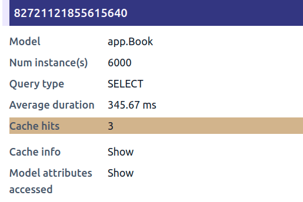
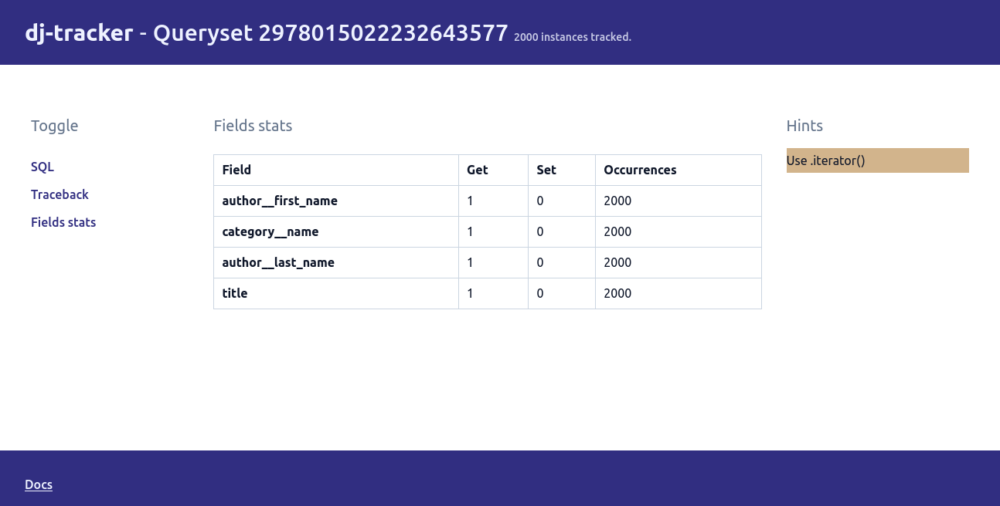

iterator usage
From the Django docs:
When you have a lot of objects, the caching behavior of the QuerySet can cause a large amount of memory to be used. In this case, iterator() may help.
dj-tracker can show how effective the caching behavior of QuerySets is via the cache_hits field:

dj-tracker will show a Use .iterator hint when the number of cache hits is equal to 1 (i.e when we use instances of a queryset only once).
Example
In our example, we're using every book instance once: when we render them in the template. However, Django's for template tag checks the length of the iterable passed or converts it into a list if it doesn't implement the __len__ method. This means that the cache hits will at least be 2 if we use the {% for ... %} templatetag: one cache hit to get the length and another one for when we actually iterate over the sequence. That's the reason why dj-tracker doesn't show this hint for our queryset.
For the sake of this tutorial, we'll use a custom templatetag which behaves similarly to the for tag, except that it doesn't check the length nor converts the iterable passed into a list beforehand. By the way, the queryset's cache is hit once. We update our template as follows:
{% load iterate_tags %}
{% iterate book in books %}
<h4>{{ book.title }}</h4>
<dl>
<dt>Author</dt>
<dd>{{ book.author__first_name }} {{ book.author__last_name }}</dd>
<dt>Category</dt>
<dd>{{ book.category__name }}</dd>
</dl>
{% enditerate %}
If we go to the books endpoint with dj-tracker running, we'll now see the Use .iterator hint:

View
Let's go ahead and update our view to use .iterator:
def books_list(request):
books = Book.objects.values(
"title",
"category__name",
"author__first_name",
"author__last_name",
).iterator()
return render(request, "books.html", {"books": books})
and run the benchmarks:
Time in ms (10 calls) - Min: 96.63, Max: 133.22, Avg: 110.21
Memory - size in KiB (10 calls) - Min: 578.33, Max: 848.29, Avg: 607.47
Memory - peak in KiB (10 calls) - Min: 3544.61, Max: 3820.03, Avg: 3575.13
Our timings haven't changed much but we are now only using 0.6MB in average (the previous average was 3.4MB). That's a 4x memory improvement without trading off too much speed.
Summary
dj-tracker can show effective a queryset's cache is and give hints on when to use the iterator method.
Since the hint is solely based on the cache hits, it may be up to you to figure out what happens when you think that your instances should only be used once but they aren't. Also, it's worth taking into consideration that the .iterator optimisation is mostly useful when you have a lot of objects as it can consume more time and memory when that is not the case.